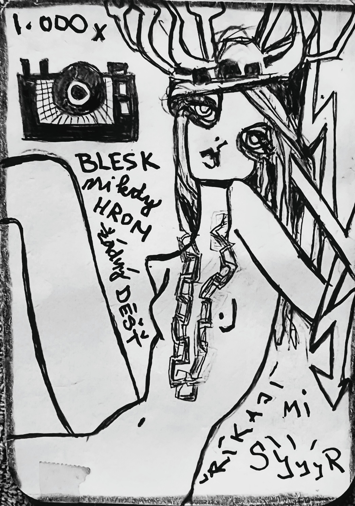

Zapsáno rukou, která nechtěla nic vysvětlit.
O PAROZÍCH
které sbíraly blesky
—
Byl jednou jeden člověk. Nebo jelen. Nebo něco mezi. Měla parohy. Ale ne obyčejné. Byly to bleskosběrné parohy. Ne pro počasí. Pro paměť.
—
Každý den do ni uhodil blesk. Ne z nebe. Z foťáku. Z cvaknutí. Z „syyyr!“
—
Tisíckrát. Blesk. Ale nikdy hrom. Žádný déšť. Jen světlo. A úsměv. A paměť, co se nikdy neptá, jestli je pravdivá.
—
Říkali ji Syyyr. Jako „sýr“, ale s ozvěnou. Protože když se usmívala, bylo to jako když se slovo snaží být obrazem. A když se neusmívala, stejně se to vyfotilo.
—
Parohy ji rostly pokaždé, když ji někdo vyfotil. Jedna větev za každou vzpomínku. Jedna zákruta za každé „syyyr“. A tak se stala živým albem. Chodila po světě a nosila na hlavě všechny momenty, které nikdo už nechtěl pamatovat.
—
Tak chodila tam a šla dál s parohy jako s antenami. Těžká od světla. Lehká od smyslu. A když ji někdo potkal, řekl: „To je ta, co má parohy z paměti. Ta, co nikdy nezmokne. Ta, co se usmívá, i když neví proč.“
—
Od té doby se říká, že když tě někdo vyfotí a ty se usměješ, možná se ti právě začíná klubat nový paroh.
—
A že „syyyr“ není jen zvuk. Je to stopa řeči v obraze. Je to blesk bez bouřky. Je to paměť, co se tváří jako přítomnost.
—
KONEC